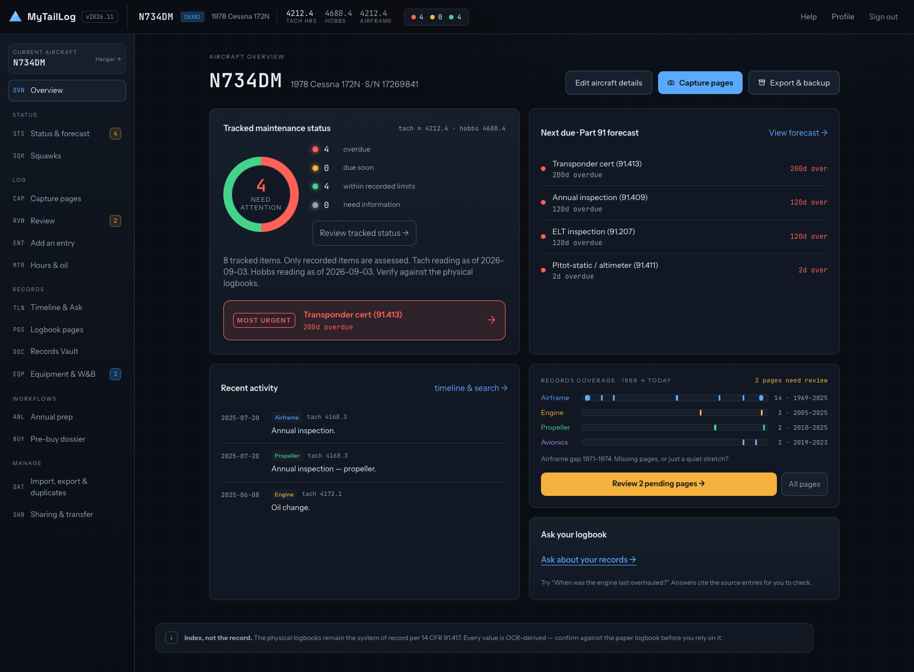
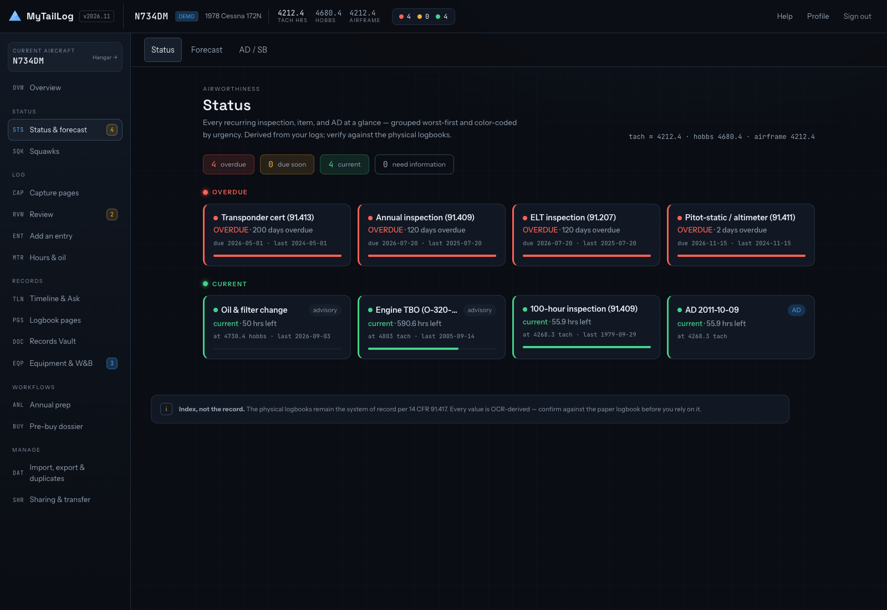
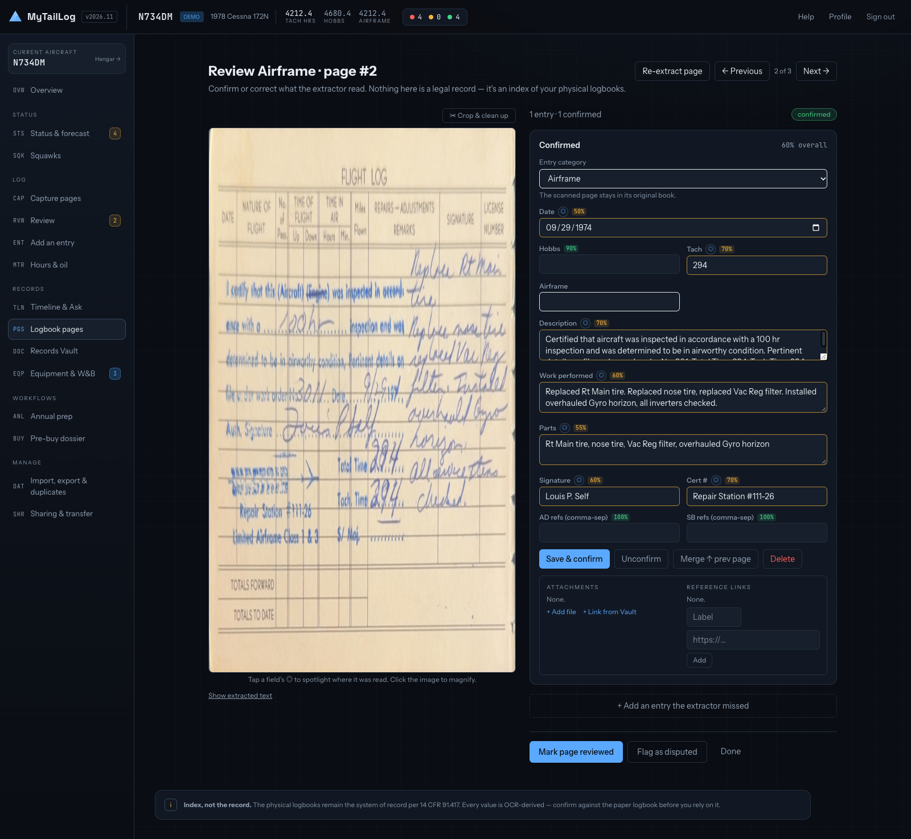
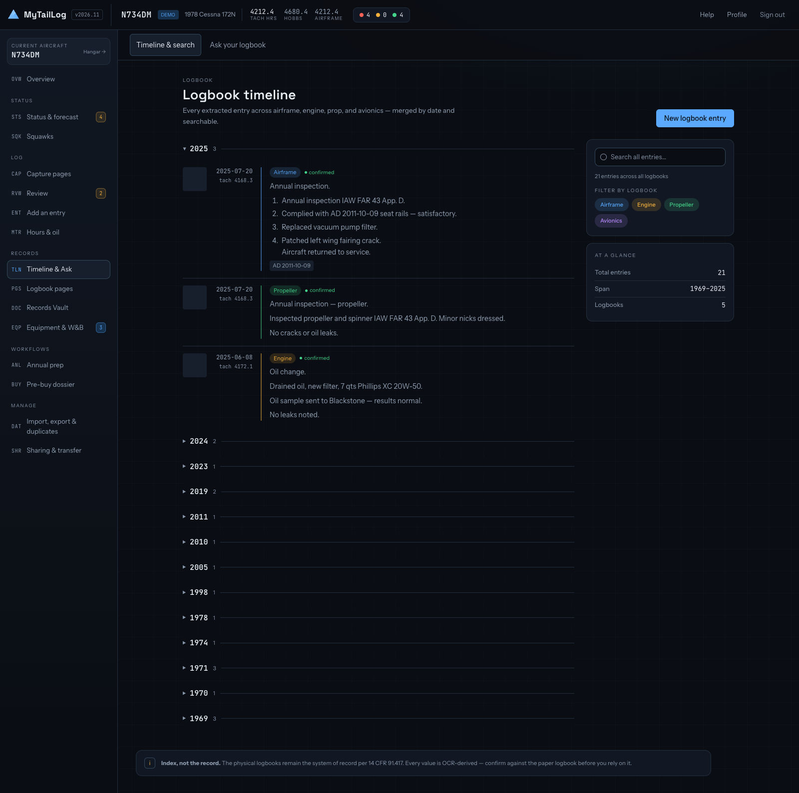

What the category looks like, and where MyTailLog stands
Research for the redesign: 25 owner-facing products, 6 enterprise trackers, the open-source field, and a screen-by-screen read of today's MyTailLog web and phone apps.
- How this was done
- The category look
- Owner apps, one by one
- Enterprise and open source
- Ideas from outside aviation
- MyTailLog today
- Capabilities to add
- What the redesign must do
How this was done
Competitor fonts, colours, navigation labels, prices and copy were read from live page source and store listings in November 2026. About fifteen product screenshots were viewed directly; everything else about in-app UI comes from vendor material or reviews and is treated as a claim. No accounts were created with any competitor.
MyTailLog was read from its source code (the Next.js web app and the Capacitor phone app), its design documents, changelog and plans, and the six product screenshots in the repository. The app was not run on a device, so a few behaviour notes below are inferred from code and marked as such.
The category look
What nearly everyone does
- Navy and sky blue with white cards. Two competitors use colours that match ForeFlight's own site almost exactly, because owners read that palette as "serious aviation software".
- Green, amber and red do all the work, usually by colour alone, and green is shouted as loudly as red.
- A dashboard of stat tiles (tach, hobbs, total time) above a due list. The same layout every day, whatever the aircraft's situation.
- Hours remaining shown without a date, and the limit that bites first (date or hours) left for the owner to work out.
- Parchment backgrounds, handwriting fonts and cockpit metaphors (annunciator, preflight, "in the green") standing in for an identity.
- The scanned page appears during review, then disappears. Nothing on the dashboard, in a reminder or in a shared link points back to the page that proves it.
What nobody does yet
- A home that answers in a sentence and changes with the aircraft's situation: all clear, something coming up, annual month, in the shop, being sold.
- One forward view that puts calendar and hour limits on the same timeline, with hours projected to dates and clusters suggested for one shop visit.
- Provenance everywhere: a page citation beside every derived number, in lists, answers, emails, links and printed documents.
- A visible scale of trust: read by AI, confirmed by the owner, signed by a mechanic.
- Status that does not depend on red and green, using position, shape and words first.
- Hand-off documents a mechanic or buyer would recognise as competent paperwork, rather than a CSV and a generic PDF.
- Hangar ergonomics: one hand, glare, gloves, offline, big targets.
Owner apps, one by one
The six most relevant products in depth, then the rest. Prices are per aircraft and were current in November 2026.
| Product | What it is | Design language | Good | Weak |
|---|---|---|---|---|
| Runup | Web app: AI reads logbooks, owner reviews beside the page, AD dashboard, ledger of entries and documents, buyer portal. Free tier; $16 to $24 a month. | Navy-black #0d1220 console, Inter Tight with IBM Plex Mono for data, square corners, seven KPI tiles, light and dark. | The most credible "pro" tool. Per-field check marks during review. A ledger that mixes entries with invoices and 337s. Written-versus-calculated time checks. | Web only, no phone app. Table-heavy. The KPI row gives every number the same weight. |
| BetterPlane | Phone app: digitize, track, log flights with oil and fuel, squawks. $119 a year. | Parchment #f0e5c8, rust #c45d3e, navy header bands, Lora serif with a racing-stripe display face, hard offset shadows, an "Annunciator" grid of lamps. | The only product with a recognisable identity. Fun, and clearly made by owners. | Skeuomorphic. Status by lamp colour alone. Cryptic codes (FVINSP, BRKDPH) as labels. |
| HobbsMate | Owners and partnerships: photo-based flight logging, scanned logbooks, cost splits. Free to $108 a year. | Navy #003367 and sky blue on warm paper; emoji as section icons; illustrations instead of screenshots. | "Snap the tach. The flight logs itself." One approval updates hours to annual, cost per hour and partner splits. The best single interaction in the field. | Five audiences on one site; feature catalogue sprawls; emoji icons. |
| Coflyt | The incumbent: tracking, flights, scheduling, billing, Garmin and ForeFlight import. $170 a year and up. | WordPress site with eight font families; app in Poppins with a navy top bar and a tile grid. | "Ready" as a word rather than a colour. Two severity counts on the status row. | Reviews say it "feels like a website" and is buggy. Fuel quantity and airworthiness tiles get the same weight. Widgets for features you do not pay for cannot be hidden. |
| Maggneto | Digitizing and tracking, with a cited-answer demo on its home page that is listed as still in development. | Stock iOS: system blue, green and orange on Tailwind greys. | Clear, honest scheduling by date, hours or both. | No brand in the app. Marketing promises more than the product shows. |
| AirLogbooks | Aircraft and pilot records together. $100 a year. | Inter on white cards; fully saturated red, amber and green rows. | Aircraft readiness and pilot currency in one list answers the real question before a flight. | Saturated colour rows are loud and leave no room for nuance; nine nav items. |
| SquawkFree | Squawks, ADs, ADS-B flight import, a human digitizing service ($299). From $4.99 a month. | Barlow Condensed, Inter and JetBrains Mono; slate and sky blue matching ForeFlight's site; square corners. | Mono numbers used inline in prose; cheap. | Responsive web only on phones; seven top-bar links. |
| Bluetail, TBX LogIQ, Crewchief, PlaneLogiX, Savvy | Services or shop-oriented tools from $49 a month to $900 a year. | WordPress or Webflow navy-and-blue sites; Poppins, Outfit, Nunito, Raleway. | "Answers with sources" (TBX, Bluetail); VOR and nav-data logs (Crewchief); expert judgment in plain English (Savvy). | Priced for operators, not a single owner. Interchangeable visual identities. |
| ForeFlight, Garmin Pilot, LogTen, MyFlightbook | Where owners already spend their time. | Dark navy chrome and dense lists (ForeFlight, Garmin); Apple-native (LogTen); 2000s menus (MyFlightbook). | flyGarmin sharing means the panel can send hours directly. LogTen treats a logbook as an asset with milestones. | Owner maintenance is thin or absent. MyFlightbook's maintenance is a form section. |
| Flighty | Flight tracking, the benchmark for aviation-flavoured consumer design. | Departure-board rows, one line per flight; content that changes as the trip progresses. | "Packed, wrapped and coloured" data so the user never interprets raw values. A screen that knows where you are in the journey. | Not a maintenance product; the lesson is the approach. |
Enterprise trackers and open source
Enterprise (CAMP, Traxxall, Veryon, WinAir, FL3XX, Quantum MX)
- A named state between OK and overdue, and the nearest limit in every unit at once (Traxxall's "Earliest Due").
- Forecasting from expected use, and "as of" stamps on every figure.
- CAMP's own framing of the job: answer "Can I fly on that day?"
- Rows of saturated count tiles, needle gauges and pie charts that decorate rather than inform.
- The limiting unit is not identified and hours are not converted to a date; reviewers complain about exactly this.
- Department navigation that is mostly empty for one aircraft and one person. No observed screen shows the original entry beside the tracked item.
Open source and hobbyist
- Deterministic, written-down status rules and the regulation cited per item.
- Local-first, exportable, no account to share. "Status indicators do not determine airworthiness" stated calmly.
- The best due line found anywhere was in a zero-star project: "Due Oct 30, 2026 at 2151.2 tach · due in 30 days · 46.5 hrs left".
- Framework-default looks (Bootstrap, PatternFly, MUI) with nothing of aviation in them.
- No hierarchy among due items: a lapsed VOR check looks the same as a lapsed annual.
- The scan is an attachment rather than a working surface. The closest overlap (Simple Aircraft Manager) shows this space is starting to fill.
Ideas worth borrowing from outside aviation
| Source | The pattern | Where it lands in MyTailLog |
|---|---|---|
| Flighty, airport boards | One line per item, fixed columns, in arrival order; the card's content changes as the item gets closer. | Due list, phone home, reminders (direction C's departures board) |
| CAMP, FL3XX | Pick a date and expected use; see what will have lapsed. | "Pick a date" in all three directions |
| ProBikeGarage, Traxxall | A dual-limit bar with the limiting unit marked; hours turned into "about" a date from recent use. | Every due item |
| Apple Weather, Things 3 | Every item on one shared time axis; groups named by horizon ("this month", "later"). | Direction A's horizon, direction B's hung groups |
| Oura, Apple Fitness | A verdict and its contributors, never a bare score. | The sentence that opens every home screen |
| Vanta, Drata | Each requirement shows the evidence that satisfies it, and its age; "no evidence" is its own state. | Citation chips; the "needs information" state |
| Rossum, Konfuzio, FamilySearch | Selecting a field lights its region on the scan; least-confident field first; accept, edit or "not on page"; keyboard-first. | The review desk in all three directions |
| Expensify, Adobe Scan | Capture now, review later on another device, with a visible queue. | Scan at the hangar, review at the desk |
| NotebookLM, Readwise | Citations that show a crop of the source on hover. | Ask answers, summaries, record room |
| Fuelly, Drivvo | Meter-first quick log with the last value, the live delta and a plausibility check. | Log a flight |
| DocSend, Stripe Atlas | A binder-style share with a cover, order, expiry, revoke and a view log. | Record room |
| CARFAX | Badges on the cover, each linked, with gaps stated plainly ("Annuals recorded 49 of 52 years"). | Pre-buy dossier |
MyTailLog today
MyTailLog already does more than most rivals: native offline phone apps, cited Ask answers, a re-importable export with scheduled Dropbox and Drive copies, oil trends, equipment reconstructed from the logs, W&B history, the A&P AD report as ground truth, an OAuth API, and an MIT licence. Its weakness is not the feature list. It is that the interface hides the product's best ideas behind its own structure.




Web: what works against the owner
- Type is too small for the audience. 24 distinct sizes, about 140 uses between 9 and 11.5px, including due dates and the legal note. Many owners are over 50.
- Dark only on screen. Hard to read in a bright hangar or office, and it fights the cream paper of every scan.
- Navigation is heavy. 15 sidebar items in 6 groups, 6 hubs with 14 sub-tabs, three different page shells, and three-letter idents that vanish on smaller screens.
- Status disappears. Readouts and the status dots in the top bar hide below 1280px and 1536px; phones lose them entirely. There is no global search and no aircraft switcher.
- Logging hours is buried in the fifth section of the Meters tab; nothing on the hangar, overview or top bar offers it.
- The overview does not lead with an answer. A gauge, an amber review button and a blue capture button compete.
- Status, Annual prep and Records gaps are read-only. Nothing can be marked done where it is seen.
- Digitizing spans four screens with no hand-offs. Reading is a manual step tied to an open tab, with no progress, cancel or allowance shown.
- Review is split between a per-page screen and a review-all scroll with different abilities; Delete acts immediately.
- AD handling has no "record compliance" action and keeps no compliance history.
- No component layer: eight heading styles, four button radii, four confirmation patterns, developer strings in the UI.
- Reminders are off by default and invisible in the product; Profile is a 936-line scroll; delete-aircraft lives on the Sharing page.
Phone: what works against the owner
- No sync on launch or return, and "Synced" is a bare word with no time. Inside an aircraft the phone shows no offline, pending or error state.
- Account, Sync now and the theme switch cannot be reached from inside an aircraft.
- The verdict ignores squawks (even "Ground"), missing carry-aboard documents and open one-time ADs; tabs carry no badges.
- Back gestures exit too far: All items and Mark done are not real screens, so a swipe returns to the hangar.
- Not native-feeling: no transitions or haptics, four sheet implementations, six system confirm dialogs, a capture sheet with no close button.
- Log a flight reformats the number on every keystroke (inferred from code), has no date field, and uses the UTC date.
- Scanning takes five taps to reach the camera and never says when pages have been read; review is cramped in a drawer.
- Small type and small targets remain (41 declarations at 9 to 12.5px; Back about 30pt).
- Squawks cannot carry a photo; Ask and sharing are buried; many edits open the website.
Strengths to keep, whichever direction is chosen
- Field-level provenance: the scan beside the form, per-field confidence, the spotlight on the source ink.
- Honest language: "≈", "as of", "needs information", "a lead, not a determination", and the 91.417 "index, not the record" line.
- One status model with real regulatory nuance (calendar-month rule, advisory versus regulatory, hours never overriding a calendar limit).
- Unconfirmed readings never move what is due; bulk confirm is strict and says what it skipped.
- Offline-first phone app with durable queues, plain wording and a conflict screen that never decides silently.
- The record room model: scoped, expiring, revocable, view-counted, confirmed entries only.
- Domain-correct details: VOR check fields per 91.171(d), the meter-replaced prompt, the carry-aboard card.
The current design system, judged
"The Glass Cockpit" is coherent on paper: annunciator colours reserved for status, one accent, hairlines instead of shadows, monospace for every number. In practice it borrows the look of the tool pilots fly with, which makes a records app feel like an instrument it is not, and it pushes type down to sizes that suit a panel at arm's length rather than a person reading a document. It is also the category's most common look (dark navy and sky blue), so it does not distinguish MyTailLog from ForeFlight or SquawkFree. The redesign keeps its discipline about colour meaning and numbers, and drops the costume.
Capabilities to add
Ranked by value to a solo piston owner and by how many competitors now set the expectation. Items marked "in all three" are drawn in every direction's mockups.
| Capability | Who has it | In the mockups |
|---|---|---|
| Hours without typing: photograph the tach | HobbsMate; flyGarmin push via Coflyt, TBX, PlaneLogiX | In all three (phone) |
| Pick a date: what lapses by then | CAMP, FL3XX (enterprise) | In all three |
| A home that changes with the situation | Nobody (Flighty, outside aviation) | In all three |
| "First read" account after the first logbook | Nobody | In all three |
| Squawk with photo, sent to the mechanic as a link | FlightBoss, Crewchief | In all three |
| Document expiries on the due list (registration, insurance) | Crewchief, FlightBoss, BetterPlane | In all three |
| "Do these together" for one shop visit | FlightGuard (claimed) | In all three |
| Written versus calculated engine and prop times | Runup, TBX LogIQ | In all three |
| Reminders that carry the whole answer; a lock-screen widget | aeroLogbook (widgets only) | In all three (phone) |
| Record compliance and keep AD history | Most trackers | In all three |
| QR code and view log on a shared link | AirLogbooks (QR), Runup (analytics) | In all three |
| Reading finishes in the background and tells you | Runup | In all three |
| Pilot currency and medical beside aircraft status | AirLogbooks, SquawkFree, HobbsMate | Not drawn; a reasonable later addition that does not change the structure |
| Cost of ownership and receipts | HobbsMate, Coflyt | Not drawn; outside the current product scope |
What the redesign must do
- Answer first. Every home screen opens with a sentence that says what the records show, then the evidence.
- Both limits, one list. Calendar and hours side by side, the one that bites first named, hours turned into "about" a date.
- The page is always one step away. A citation chip beside every derived value, everywhere it appears.
- Five places, not fifteen. One Add action and one Search-or-ask field replace most of the sidebar.
- One pipeline from paper to index, with a visible queue, background reading and a single review desk.
- Readable by a 60-year-old in a hangar. Body text at 16 to 17px, light themes, 44pt targets, the main action within thumb reach.
- Never a verdict. The paper logbook is the record. The app says what the records show and never "airworthy".
- An identity that is not the category's. No navy-and-sky cockpit, no parchment, no annunciator lamps. Each direction takes its look from something owners know that the category has not used.